Analiza rješenja · JOI Spring Camp 2018 · Dan 4
Knjižnica
O ovom članku
Tekst je prijevod službene japanske prezentacije rješenja, preoblikovan u članak. Slajdovi su ugrađeni kao slike; natpis pod svakim slajdom je prijevod teksta na njemu. Dijelovi označeni kao trenerska napomena nisu u izvornoj prezentaciji — dodani su da popune korake koje slajdovi preskaču ili samo skiciraju.
Slajdovi
Zadatak
izvorni slajdovi 1–4
-
1Naslov. -
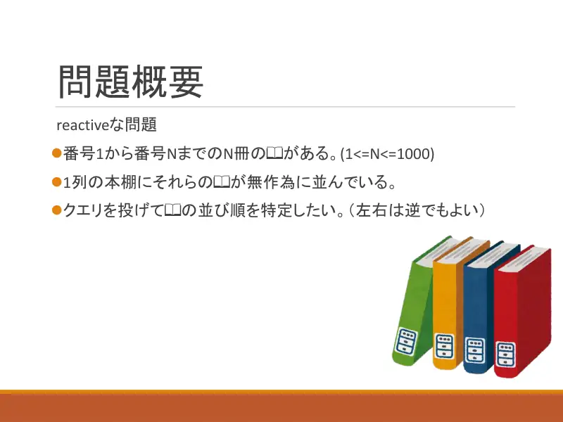
2Interaktivni: $N\le1000$ knjiga u nepoznatom poretku; odredi poredak (ili obrnuti). -
3Upit sa skupom $M$ vraća minimalan broj vađenja uzastopnih blokova; ≤20000 upita. -
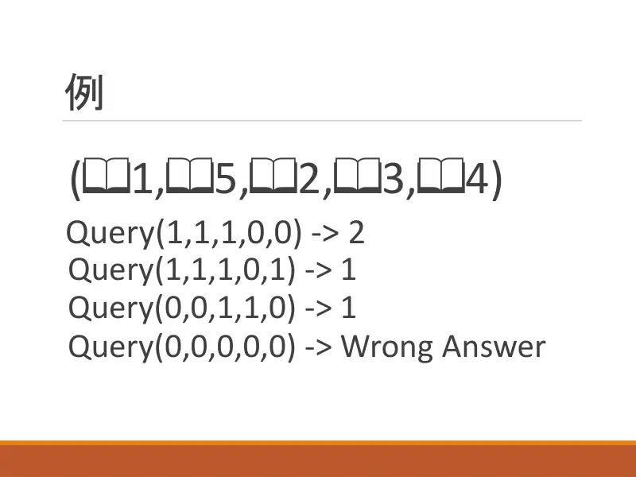
4Primjer $(1,5,2,3,4)$: $\{1,2,3\}\to2$, $\{1,2,3,5\}\to1$, $\{3,4\}\to1$; prazan skup → WA.
← → tipke ili klik na sliku
Preformulacija
Koraci algoritma
Adjacent(M)
izvorni slajdovi 5–10
-
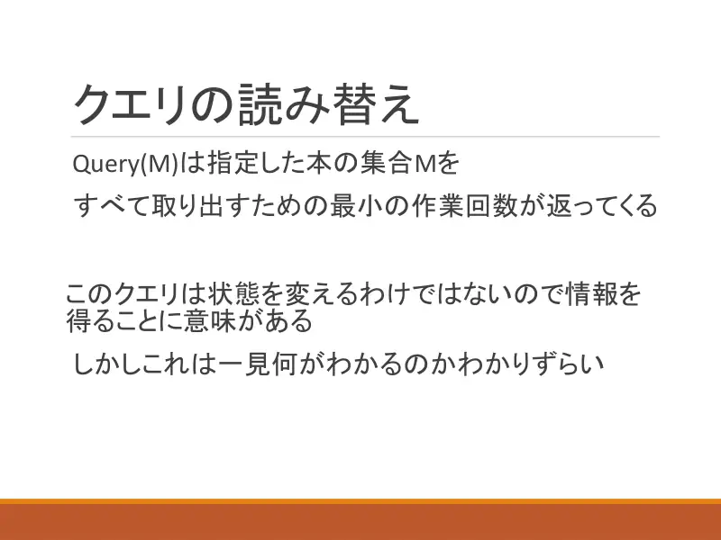
5Upit ne mijenja stanje, služi samo za informaciju — ali što nam govori? -
6Broj operacija raste s brojem izoliranih knjiga; svaki susjedni par smanjuje ga za 1. -
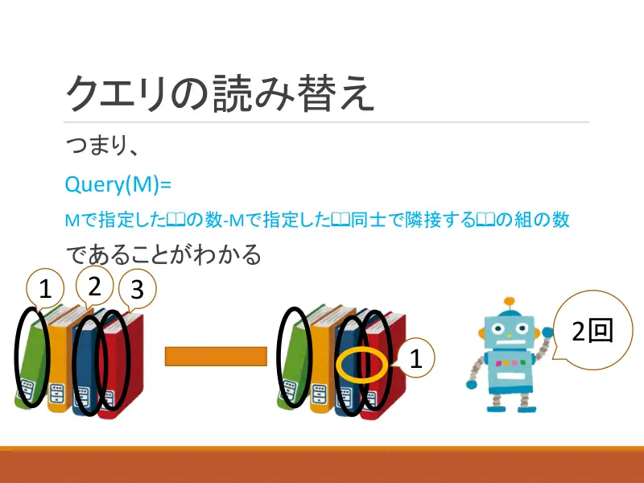
7$\mathrm{Query}(M)=|M|-$ (broj susjednih parova unutar $M$). -
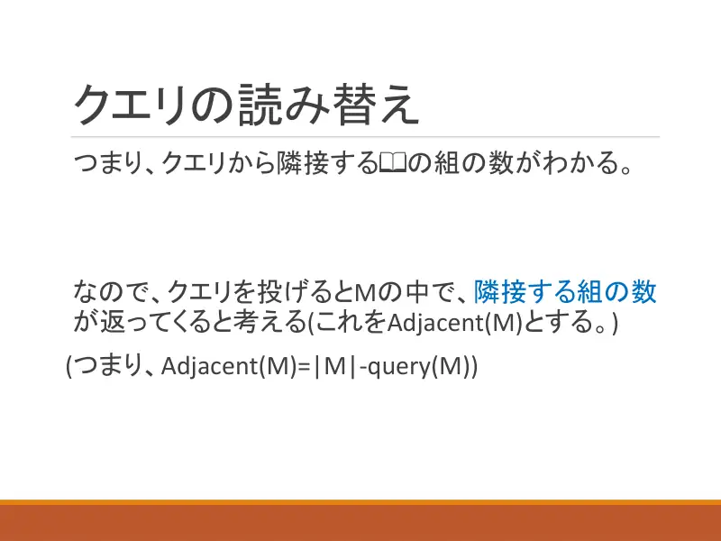
8Dakle $\mathrm{Adjacent}(M)=|M|-\mathrm{Query}(M)$ = broj susjednih parova. -
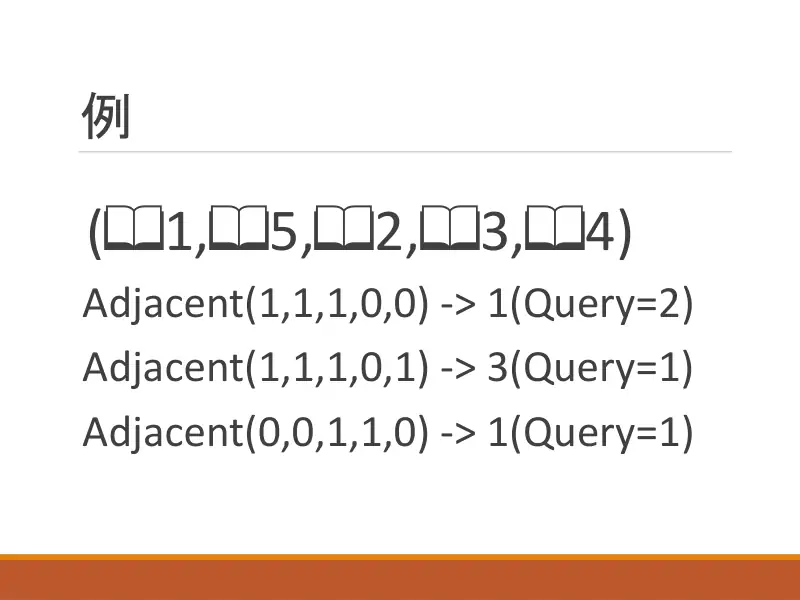
9Primjer: $\mathrm{Adj}(\{1,2,3\})=1$, $\mathrm{Adj}(\{1,2,3,5\})=3$, $\mathrm{Adj}(\{3,4\})=1$. -
10$N-1$ susjednih parova, budžet 20000 ≈ $\log N$ upita po paru. Rubna knjiga: $\mathrm{Adj}(\text{sve}\setminus x)$ je $N-2$ za rub, $N-3$ inače.
← → tipke ili klik na sliku
Podzadatak 1 19 bodova
Koraci algoritma
Svi parovi
izvorni slajdovi 11–12
-
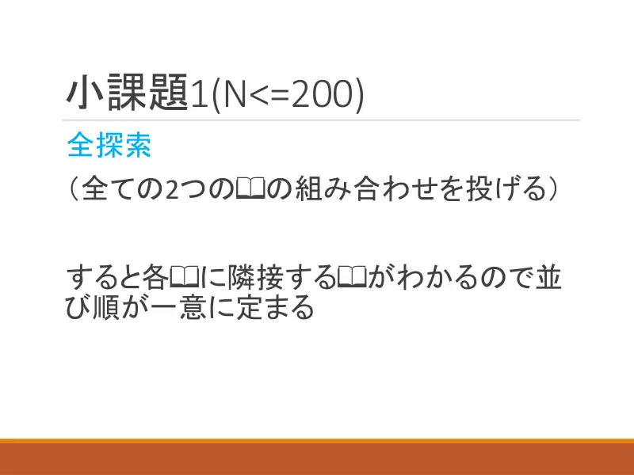
11Pitaj sve parove; susjedstva određuju poredak. -
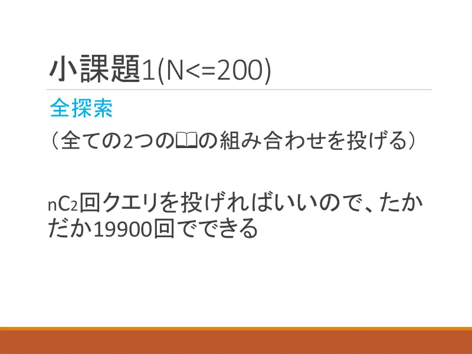
12$\binom N2\le19900$ upita.
← → tipke ili klik na sliku
Puno rješenje 81 bod
Koraci algoritma
Binarna pretraga susjeda
izvorni slajdovi 13–18
-
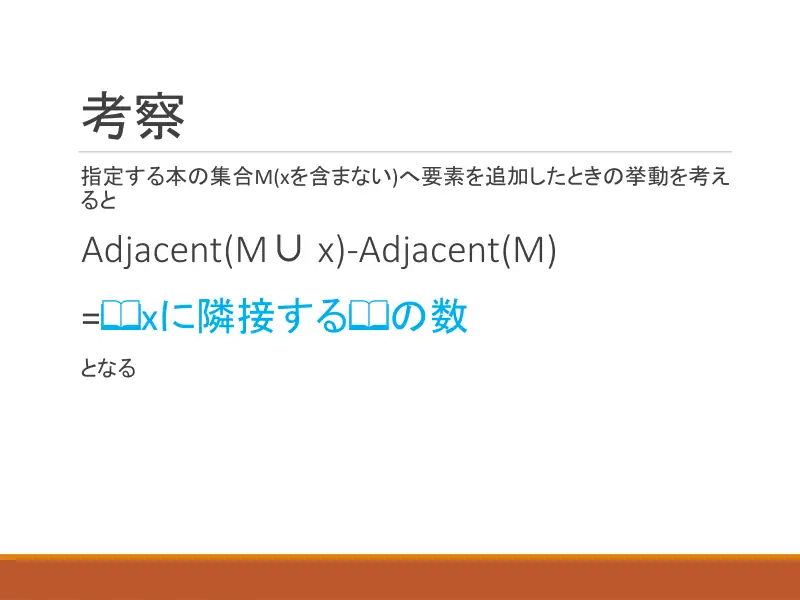
13$\mathrm{Adj}(M\cup x)-\mathrm{Adj}(M)$ = broj susjeda $x$ u $M$. -
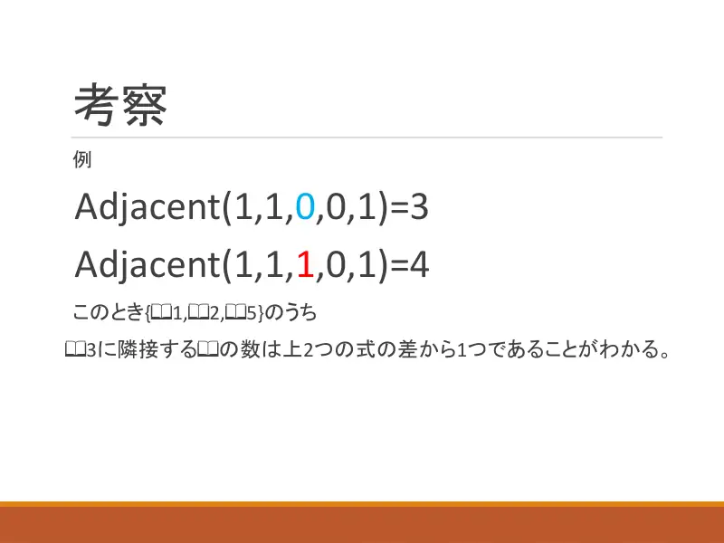
14Primjer: $\mathrm{Adj}(\{1,2,5\})=3$, $\mathrm{Adj}(\{1,2,3,5\})=4$ → knjiga 3 ima jednog susjeda među $\{1,2,5\}$. -
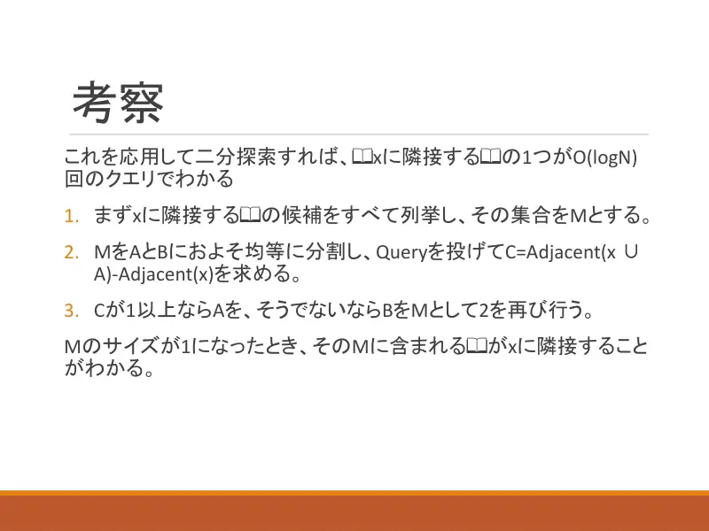
15Binarna pretraga: kandidati $M$; podijeli na $A,B$; $C=\mathrm{Adj}(x\cup A)-\mathrm{Adj}(A)$; ako $C\ge1$ nastavi s $A$, inače s $B$; $|M|=1$ → susjed. -
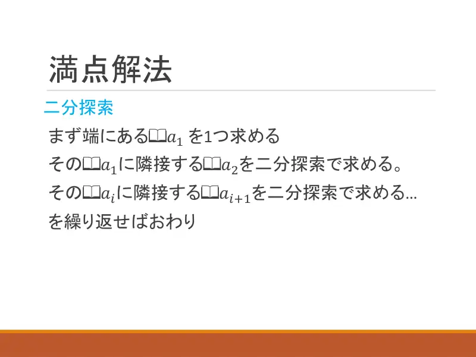
16Nađi rubnu $a_1$; binarnom pretragom $a_2$ susjed $a_1$; pa $a_3$ … -
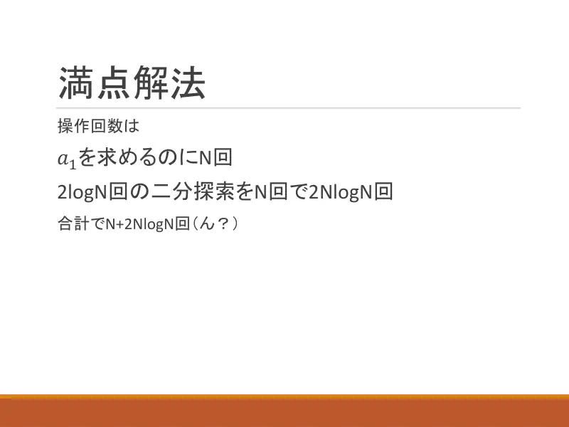
17Upita: $N$ za $a_1$, $2\log N$ po koraku → $N+2N\log N$ (hm?). -
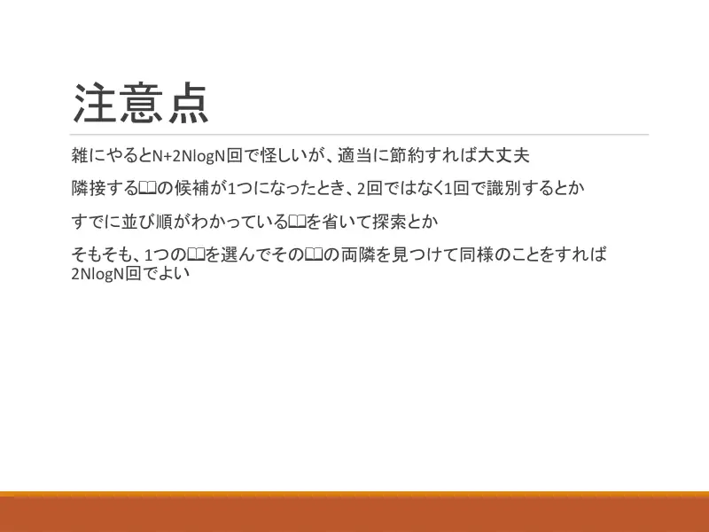
18Grubo je $N+2N\log N\approx21000$ — previše; uštede: jedan upit kad ostanu dva kandidata, izbaci poredane iz pretrage; ili kreni iz sredine i traži oba susjeda ($2N\log N$).
← → tipke ili klik na sliku
Slajd
Statistika
izvorni slajd 19
-
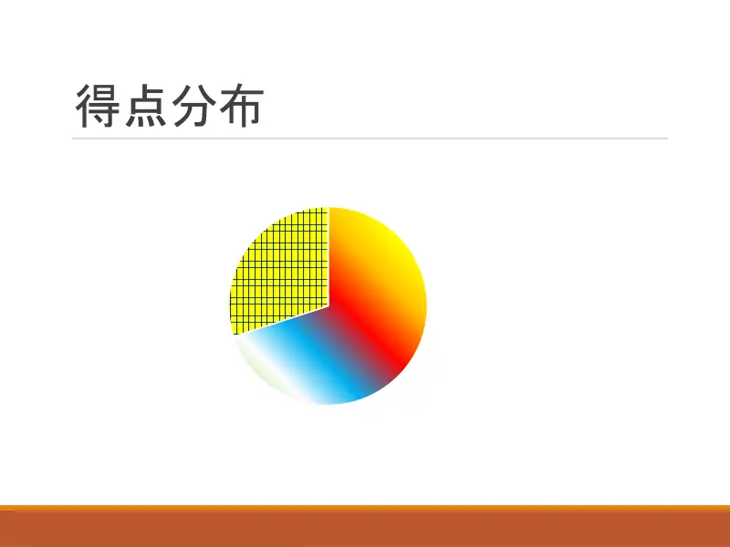
19Raspodjela bodova.
Sažetak
- $\mathrm{Adj}(M)=|M|-\mathrm{Query}(M)$; razlika upita broji susjede jedne knjige u skupu.
- Rub u $N$ upita, zatim binarna pretraga sljedećeg susjeda; pripazi na budžet.